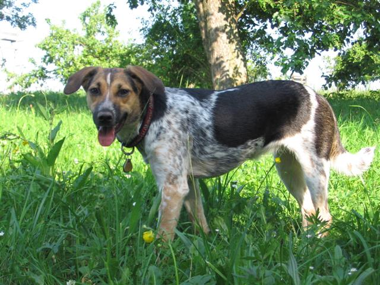

Navigace |
Nele je 10 měsícůJsou věci, za které si od Nely vykoledujeme vyčítavé pohledy, jako třeba když jí nedáme špagety nebo jablko, nebo jí odháníme od nějaké bezva zábavy, ale aktualizace jejích www stránek mezi ně nepatří a je jí docela šumák…a podle toho to tak vypadá, takže mám co dohánět.  Jak tedy Nela strávila poslední měsíc? Určitě to tipnete - cetování, poznávání nových psů, ochutnávání dosud neznámých jídel a zkoušení nových věcí, to přece chceme všichni :-) Kromě toho taky pravidelně řádí ve Stromovce. Svou přchylností k mrtvým zvířatkům všeho druhu, na nichž se nejprve vyválí a pak si je odnese a snaží se je sežrat (což, pokud má zornva v tlamě kosí křídlo opravdu není snadné), si vykoledovala chůzi na stopovačce. Díky 10 metrové šňůře a rychlým vysokým startům tak máme nyní šanci ji lapit a obejít se tudíž bez důkladného šamponování, jež jsme v jednom týdnu absolvovali asi 4x za sebou. Aby byla vatší šance, že se Vám Neliny stránky načtou dřív, než to vzdáte, rozdělila jsem je do tří částí. Červenec 2006: Díl 1. Cestování Červenec 2006: Díl 2. Poznávání nových psů Červenec 2006: Díl 3. Zkoušení nových věcí
|